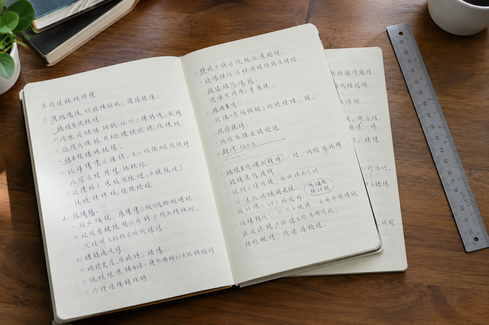

一本文字练习簿，能看出成都模仿笔迹所需的书写习惯吗
练习簿页数多，却未必每页都适合作为自然书写样本。

先看是否连续自然
反复临写同一句话的练习页，通常更能反映练习目标，而非平时的行文习惯。挑选成都模仿笔迹参考材料时，可优先找写给自己看的笔记、日程记录或较长的手写段落。
重复字要跨页观察
一个字在同一页出现几次，形态略有不同很正常。把不同日期的页面放在一起，观察稳定的笔画安排与自然波动，比只挑最像的一处有用。模仿签字也有正式和快速写法，不宜混为一种。
扫描不要抹掉细节
手机美化会压平淡墨和细笔画。保留未经滤镜处理的原图，再附一张正面拍摄的完整页。需要笔迹鉴定时，材料形成时间与纸张来源也应写清楚。